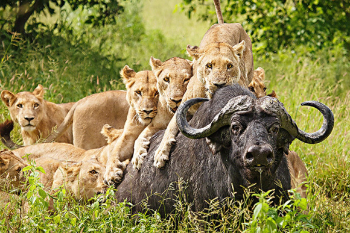
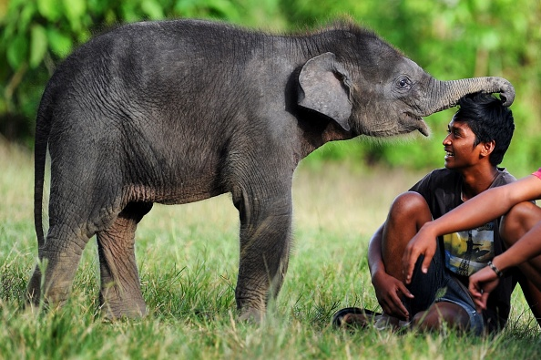
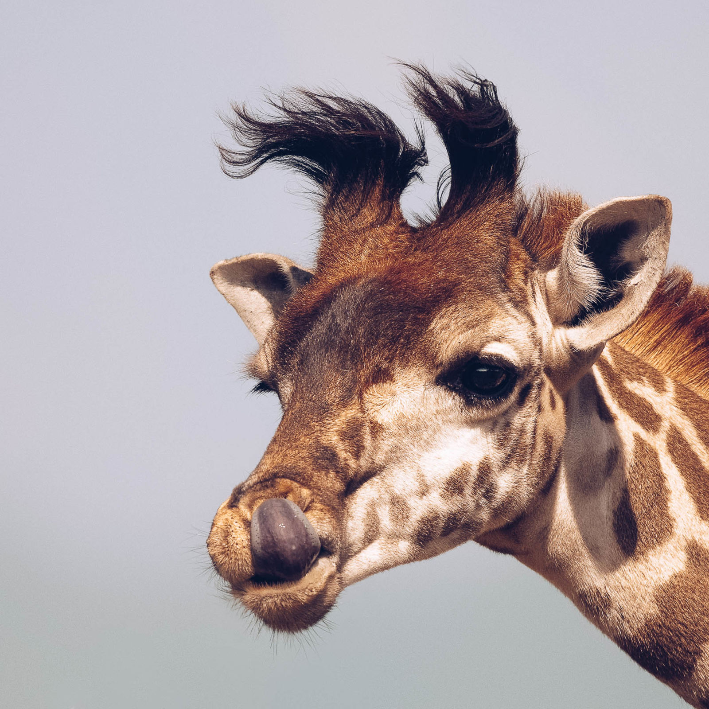
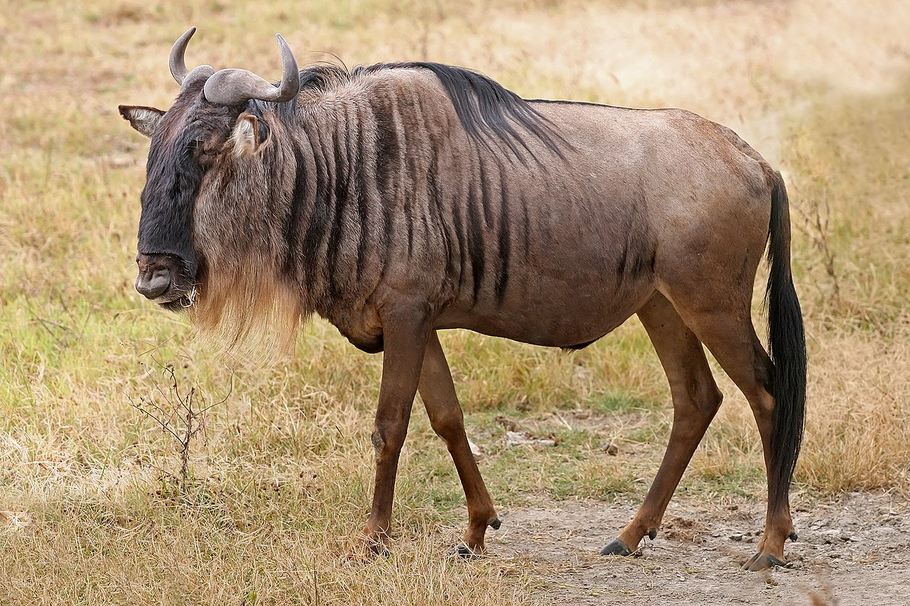

The first creature we will be looking at is the hippopotamus. They can be found in rivers and marshes (their name actually comes from the greek word for river horse). They are big, nearly hairless mammals with a huuuuuuge mouths. They can weigh anything from a ton, to a ton and a half. Unfortunately for us, these guys aren't exactly gentle giants. If you see a hippo, do not, and I repeat, DO NOT go near it. If one is charging at you, well, good luck.

My man just accepted his fate lol
The Lion
Lions are found on the plains of the savannah and, contrary to popular belief, they cannot be found in the jungle eating bugs with a meerkat and a warthog. They move in groups called prides. Each pride is led by an alpha, which is the male. There can only be one alpha in a pride due to incest reasons. Young male cubs leave the pride early on for this reason. This makes the whole plot of the Lion King fairly unsettling (seeing as Simba and Nala would be half-siblings) but that's a story for another day. In the day to day life of lions, females do the hunting while males watch the pride and the young (topple the patriarchy!). If you haven't watched a video of lioness pack taking down a giraffe I highly reccomend it.

The Elephant
Elephants are one of my favorite animals, just because of how friendly they seem. Of course, I still wouldn't recommend making them angry, but that goes for anything that weighs more than 60 times as much as you. Elephants come from the same family as mastodons and wolly mammoths. A common traits shared in this class are their long trunks and tusks. Apparently, the same chemicals release in elephants brains when they see humans, as human's brains when they see puppies. In other words, they think we're cute.

The Giraffe
Giraffes are the tallest mammal on earth, but have you ever wondered why. Giraffes needed to reach higher and higher to get the good food, so eventually, through a process called adaptation, the girrafes with the short necks died out and the ones with the long necks were able to get the food that was really high on the trees. Necks aren't the only long things that giraffes have. Their toungues are more than a foot and half long!

Wildebeest
Wildebeest are basically the punching bag of the Kenyan food chain. They are eaten by most of animals at the top. To combat this, they graze in herds mixed with zebra for heightened awareness. The more bodies there are, the less likely you are gonna get eaten. If they see a sign of predators, STAMPEDE! That reminds me of a joke I heard. How do you stop a herd of wildebeest from charging? You take away their credit cards.